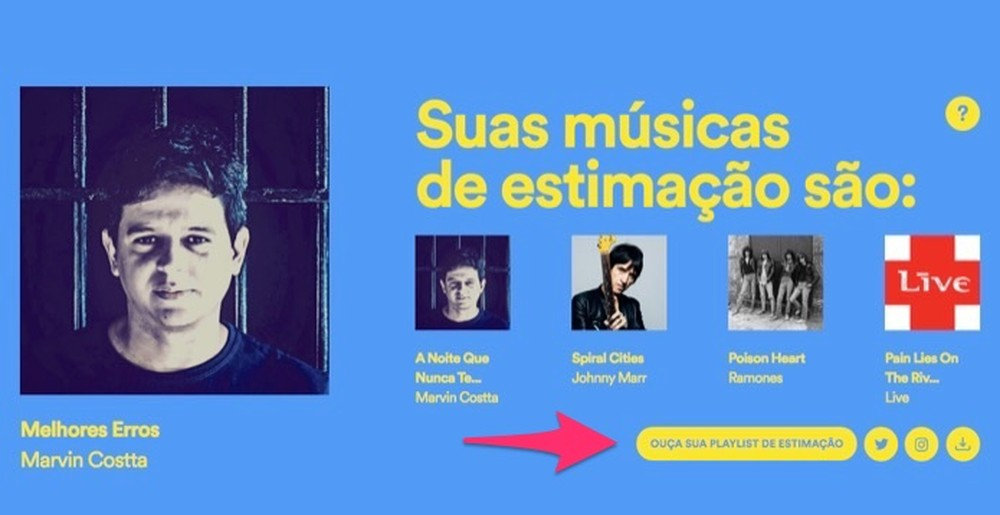
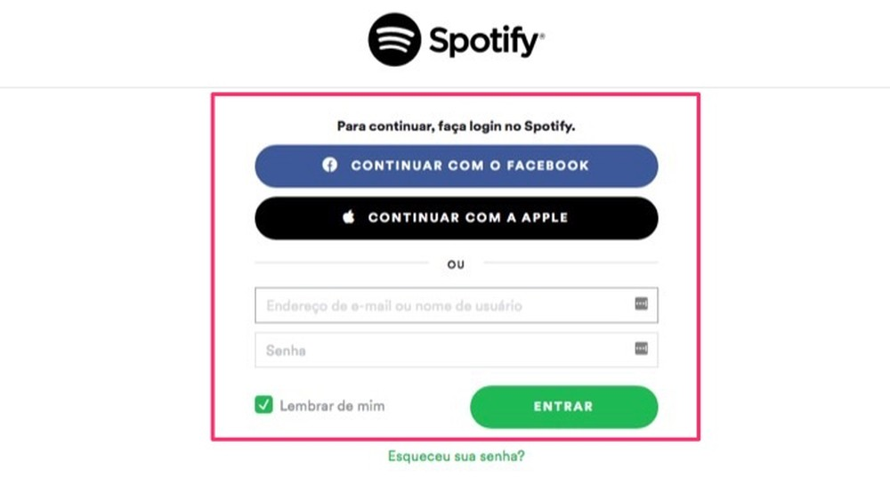
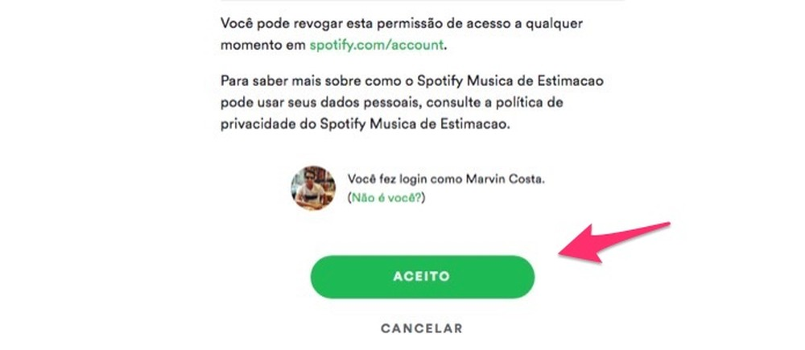
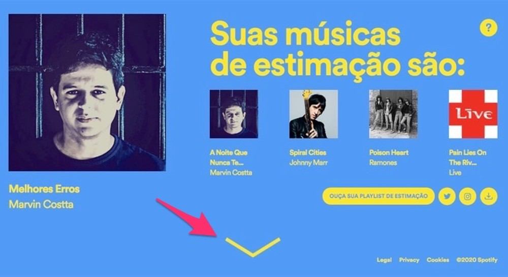
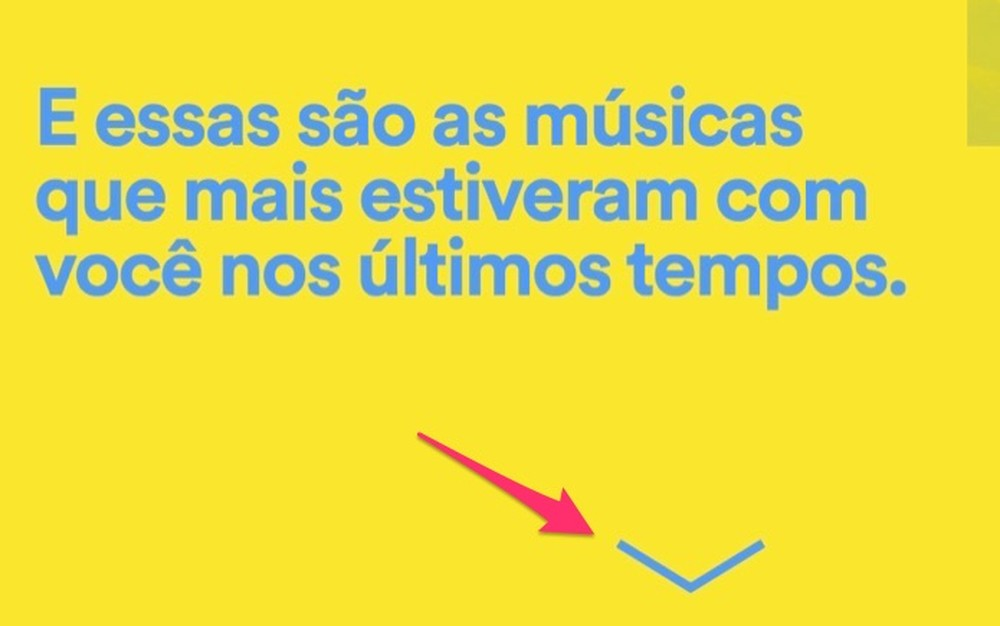

O site How Much Toilet Paper howmuchtoiletpaper.com é uma calculadora online que ajuda a prever a quantidade de papel higiênico necessária para sobreviver à quarentena. Com o avanço do novo coronavírus e a corrida aos supermercados para estocar suprimentos e produtos de higiene, alguns itens se tornaram extremamente disputados. Caso você esteja se perguntando se tem a quantidade suficiente de rolos para enfrentar o isolamento, este tutorial pode te ajudar. Basta informar a quantidade de rolos que você armazenou e o número de visitas diárias ao banheiro, e a calculadora ditará a sentença. É possível acessar a plataforma por navegadores como o Chrome, Firefox e Microsoft Edge. Por padrão, o site considera um período de quarentena de 14 dias, uma média de cinco passadas de papel higiênico por visita ao banheiro, duas folhas a cada passada e 160 folhas por rolo. Essas definições podem ser alteradas em "Advanced Options".
O How Much Toilet Paper não passa de uma brincadeira, mas a quarentena é coisa séria. Segundo especialistas em saúde, evitar lugares públicos, aglomerações e saídas não essenciais é uma medida fundamental para impedir o contágio pelo novo coronavírus, assim como lavar as mãos. No Brasil, até o fechamento desta matéria, já eram 904 casos confirmados do vírus e onze mortes causadas pela COVID-19.
Dados via Ministério da SaúdeDescobrir as músicas que você mais ouve no Spotify é fácil com a nova função do streaming. O serviço liberou uma página interativa que mostra as "músicas de estimação" de cada usuário. Disponível na web pelo PC e nos smartphones Android e iPhone (iOS), a ferramenta usa dados do histórico de reprodução para apresentar duas playlists: a primeira conta as músicas mais reproduzidas em todo o período de uso e outra com as canções mais ouvidas pelo usuário no momento.
Além de salvar as listas na conta, o recurso permite compartilhar uma imagem com a apresentação das listas para que amigos das redes sociais possam curtir e comentar sua atividade no serviço de streaming. A seguir, confira como ativar as playlists para descobrir as músicas mais ouvidas por você no Spotify.
Passo 1. Acesse o link musicadeestimacao.byspotify.com e pressione o botão "Descubra agora" para iniciar a página dinâmica criada pelo serviço. Se for necessário, dê autorização à ferramenta para acessar sua conta;
Passo 2. Essa tela indica que as músicas da playlists são as que você mais ouviu desde que começou a usar o serviço. Clique sobre o ícone de seta na parte inferior da tela para continuar;
Passo 3. A próxima tela apresenta suas músicas de estimação. Pressione o botão "Ouça sua playlist de estimação" para avançar;
Passo 4. Use uma das opções de login em sua conta do Spotify. Para esse exemplo, utilizaremos a opção "Continuar com o Facebook";
Passo 5. Clique sobre a opção "Aceito" para continuar o procedimento;
Passo 6. Nesse momento, a playlist será gerada em sua conta do Spotify e você poderá iniciá-la no Spotify Web. Você também pode clicar sobre os links de compartilhamento para enviar para as redes sociais uma imagem com a prévia de sua playlist. Para continuar na apresentação, clique sobre no botão na parte inferior da tela;
Passo 7. Clique sobre o ícone de seta novamente para que o sistema gere a playlist do momento;
